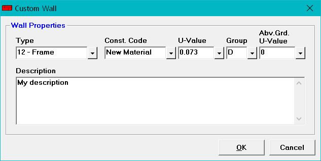

Custom Wall Dialog |
  
|
Custom Wall Dialog |
|
Click the Create Custom button on the Wall Material dialog to open this dialog.

Type: Specifies the list in which the new wall will be included on the Wall Material dialog.
Const. Code (Construction Code): Specifies the code that will appear on the Room Data window and the reports when you select this wall. You can enter any text you want for the construction code, up to 20 characters, but the first character must not be a number.
U-Value: Specifies the u-value of this wall.
Group: For above ground walls, enter the group code, which is used to determine the CLTD table to use for this wall. Group A is for the walls with the smallest thermal mass, such as a frame wall with no board and no batt insulation, while Group K is for those with the heaviest thermal mass, such as a block wall with framing and lots of both board and batt insulation.
The easiest way to find the appropriate group to use is to close the Custom Wall window, then browse through the standard walls and find one that most closely matches your custom wall, and use the standard wall's group for your custom wall.
For basement walls (type 15), enter the group code to be used for any above grade portion of the wall.
Abv.Grd. U-Value (Above Grade U-Value): If this is a basement wall (type 15), specifies the above grade u-value for this wall. This value will be used for the above grade portion of this wall.
Description: Specifies the text used to describe this wall on the Wall Material dialog as well as the reports.
OK Button: Adds your new custom roof to the list of custom walls.
Cancel Button: Closes this dialog without adding a custom wall.